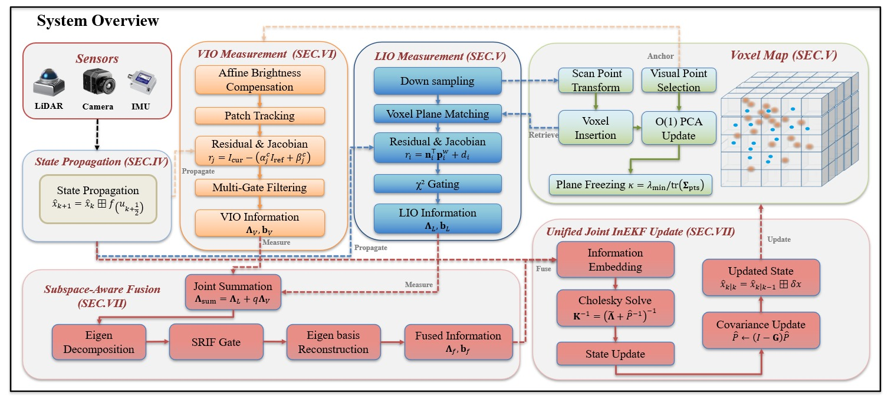
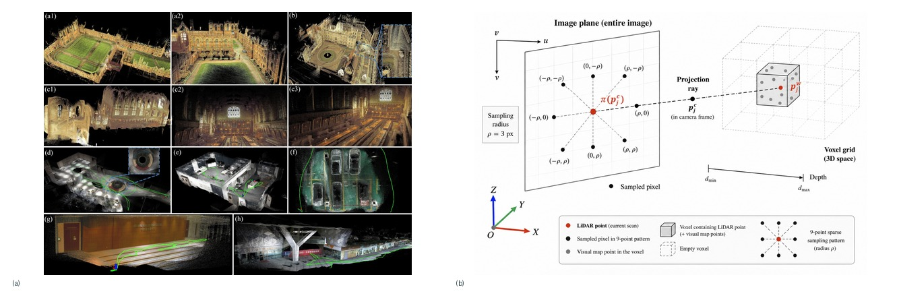

这篇论文围绕移动机器人定位与建图系统遇到的“单一传感器会在遮挡、稀疏几何、动态物体或长距离运行中失去稳定约束”展开，核心看点是方法主线是围绕传感器融合、几何约束、地图表达、回环检测或学习式前端把输入、处理和输出连起来；线索落在 LiDAR, odometry, fusion, visual, SA-LIVO。
1. 题目里最值得先圈出的词是：odometry, lidar-inertial, visual-inertial, livo, fusion, degeneracy, degradation, LiDAR。它们把文章带到室内外移动机器人、自动驾驶或大尺度建图场景，也暗示后面要解决单一传感器会在遮挡、稀疏几何、动态物体或长距离运行中失去稳定约束。
2. 摘要先交代问题：移动机器人定位与建图系统面对的核心风险是单一传感器会在遮挡、稀疏几何、动态物体或长距离运行中失去稳定约束；线索落在 LiDAR, odometry, visual, Tightly, LiDAR-visual-inertial。这决定了文章的重点不是堆结果，而是解释问题为什么会发生。
3. 接着看做法：方法主线是围绕传感器融合、几何约束、地图表达、回环检测或学习式前端把输入、处理和输出连起来；线索落在 LiDAR, odometry, fusion, visual, SA-LIVO。方法部分优先找清楚输入、假设、核心运算和输出。
4. 图注里反复出现 LiDAR, IMU, VIO, mapping, camera，这些词多半对应系统流程、实验设置或结果展示，是读图时最容易抓住的线索。
5. 这篇有代码或复现线索，读完方法后可以直接检查代码是否覆盖数据预处理、训练/检测和评估脚本。
读《SA-LIVO: Efficient LiDAR-Inertial-Visual Odometry with Subspace-Aware Degeneracy Handling》时，可以先把主角放在室内外移动机器人、自动驾驶或大尺度建图场景里：移动机器人定位与建图系统面对的核心风险是单一传感器会在遮挡、稀疏几何、动态物体或长距离运行中失去稳定约束；线索落在 LiDAR, odometry, visual, Tightly, LiDAR-visual-inertial。作者接着把镜头推到做法上，重点是方法主线是围绕传感器融合、几何约束、地图表达、回环检测或学习式前端把输入、处理和输出连起来；线索落在 LiDAR, odometry, fusion, visual, SA-LIVO。到了实验部分，证据会落在实验主线是用轨迹误差、地图一致性、传感器退化、跨数据集对比和实时性验证问题是否真的被触碰到；线索落在 benchmark, Experiments, HILTI, New College, Oxford Spires。最后再回到工程问题：结论要落到SLAM 前端/后端、地图维护、传感器降级和部署算力预算；线索落在 benchmark, Experiments, HILTI, New College, Oxford Spires。这样读下来，论文就不是一堆模块名，而是一条从风险、动作、证据到落地边界的线。
1. 背景和问题：先看矛盾从哪来
开篇先把矛盾摆出来：移动机器人定位与建图系统原本依赖稳定输入工作，但现场会遇到单一传感器会在遮挡、稀疏几何、动态物体或长距离运行中失去稳定约束。移动机器人定位与建图系统面对的核心风险是单一传感器会在遮挡、稀疏几何、动态物体或长距离运行中失去稳定约束；线索落在 LiDAR, odometry, visual, Tightly, LiDAR-visual-inertial。读这一段时，不必急着记术语，先看清作者认为“危险”到底发生在哪个环节。
1. 场景压力：线索落在 LiDAR, odometry, visual, Tightly, LiDAR-visual-inertial，说明论文把问题放在室内外移动机器人、自动驾驶或大尺度建图场景里看，定位结果会继续影响后续通信、控制或授时。
2. 失效来源：线索落在 benchmark, Experiments, HILTI, New College, Oxford Spires，危险点在于输入被污染后，移动机器人定位与建图系统仍可能给出像正常一样的输出。
3. 作者抓住的变量：线索落在 LiDAR, odometry, fusion, visual, SA-LIVO，这就是后文要反复跟踪的观测量、攻击参数或系统状态。
4. 这对定位系统的影响：线索落在 Existing，影响会从单个观测扩散到SLAM 前端/后端、地图维护、传感器降级和部署算力预算。
2. 方法拆解：把做法拆成输入、核心动作和输出
方法部分可以当作一条处理链来看：输入是什么，传感器融合、几何约束、地图表达、回环检测或学习式前端怎样把信息组织起来，最后又怎样服务于SLAM 前端/后端、地图维护、传感器降级和部署算力预算。方法主线是围绕传感器融合、几何约束、地图表达、回环检测或学习式前端把输入、处理和输出连起来；线索落在 LiDAR, odometry, fusion, visual, SA-LIVO。这样读会比逐个背模块名轻松，也更容易看出作者真正改动了哪里。
1. 输入/观测：线索落在 SA-LIVO Joint InEKF, Update, NVIDIA Jetson Orin, ARM Cortex-A78AE，数字包括 2.2 GHz，先确认这些输入是实测、回放、仿真，还是由模型生成。
2. 核心步骤：线索落在 LiDAR, Require, Propagated, Our, Fig，把这些步骤按时间顺序串起来，就是论文的主处理链。
3. 模型或检测量：短句线索是 8.，读到这里要分清哪些是可测变量，哪些是作者构造出的判断量。
4. 输出形式：线索落在 dataset, SION, SA-LIVO, Solve, Cholesky，输出必须能被后续模块消费，才有机会接入SLAM 前端/后端、地图维护、传感器降级和部署算力预算。
5. 接入方式：线索落在 LiDAR, IMU, camera, Livox AVIA，数字包括 10 Hz, 200 Hz，工程接入时要明确它改变告警、权重、地图还是控制决策。
3. 主图和关键图解：先沿着数据流走一遍

主图：系统总览 ：SA-LIVO
原文图注可以译为：“系统总览 ：SA-LIVO. LiDAR, camera, and IMU streams enter from the top; IMU measurements drive continuous state propagation (Sect. IV-B)”。它展示的是论文的整体组织方式：哪些传感器或观测先进来，中间经过哪些估计、融合或更新模块，最后形成状态、地图或告警结果。

实验图：组合实验图：代表性建图结果 ：SA-LIVO 在多种环境中
这是一组实验图合成预览，原图注大致对应：“代表性建图结果 ：SA-LIVO 在多种环境中. (a1)–(c3): Oxford Spires [4] outdoor and indoor scenes. (d)–(f): self-collected；Qualitative 建图 comparison on the indoor-chairs sequence from our self-collected dataset. (a1)–(a2) Two viewpoints of the complete SA-LIVO”。放在一起看，重点不是逐个抠细节，而是判断作者是否覆盖了足够多的场景、轨迹或结果形态，以及这些结果能否支撑轨迹误差、地图一致性、传感器退化、跨数据集对比和实时性这一部分的结论。
4. 实验验证：看数据、场景和指标是否对得上问题
实验部分重点看证据链是否完整：数据从哪里来，场景够不够真实，指标是否能说明问题。这篇的验证线索落在轨迹误差、地图一致性、传感器退化、跨数据集对比和实时性。实验主线是用轨迹误差、地图一致性、传感器退化、跨数据集对比和实时性验证问题是否真的被触碰到；线索落在 benchmark, Experiments, HILTI, New College, Oxford Spires。如果图表里能同时看到成功样例和困难样例，结论就更有参考价值。
1. 数据来源：线索落在 fusion，先看数据来自真实设备、公开数据集还是仿真环境。
2. 实验场景：线索落在 benchmark, Experiments, HILTI, New College, Oxford Spires，场景越贴近室内外移动机器人、自动驾驶或大尺度建图场景，结论越值得迁移。
3. 对比指标：线索落在 IMU, Nvalid, Nmin, Jacobians，这里要看指标是否直接对应单一传感器会在遮挡、稀疏几何、动态物体或长距离运行中失去稳定约束。
4. 结果读法：线索落在 LiDAR, Each, Nobs, LiDAR-anchored，重点不是单个数值好看，而是强弱场景和失败样本能否解释得通。
5. 失败边界：线索落在 LiDAR, odometry, visual, camera, Accumulating Jacobians，这些边界决定方法换平台后要重新标定什么。
5. 贡献边界和复现：把亮点翻成工程判断
最后再看边界：作者证明了什么，哪些条件下成立，换到自己的平台是否还需要重做标定或实验。对工程读者来说，关键是它能否接到SLAM 前端/后端、地图维护、传感器降级和部署算力预算。结论要落到SLAM 前端/后端、地图维护、传感器降级和部署算力预算；线索落在 benchmark, Experiments, HILTI, New College, Oxford Spires。
1. 主要贡献：线索落在 LiDAR, odometry, fusion, visual, SA-LIVO，贡献要回到SLAM 前端/后端、地图维护、传感器降级和部署算力预算才有工程价值。
2. 适用条件：线索落在 benchmark, Experiments, HILTI, New College, Oxford Spires，这些条件决定论文结论能不能迁移到自己的传感器和场景。
3. 工程收益：线索落在 LiDAR, odometry, visual, Tightly, LiDAR-visual-inertial，真正的收益是减少误信、漂移、漏检或计算开销。
4. 需要复核的边界：线索落在 Existing，复现时要优先检查数据、参数、同步和评价脚本。
1. 如果把 odometry 换到自己的机器人或车辆平台，最先需要重新标定的是输入数据、阈值，还是传感器外参？
2. 论文里的证据是否覆盖了室内外移动机器人、自动驾驶或大尺度建图场景里最容易失败的场景，还是只证明了一个受控设置？
3. 这套做法接入SLAM 前端/后端、地图维护、传感器降级和部署算力预算时，应该输出连续可信度、离散告警，还是直接改变优化权重？
图像来自论文 PDF，仅用于论文解读和学术讨论，正式转载前建议核对论文许可和作者要求。